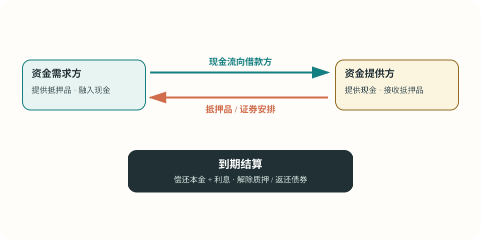

货币银行学 · 第 11 章
货币市场如何为金融体系提供短期流动性？
从同业拆借、回购、票据和同业存单出发，理解短期资金价格、抵押品、回购利率、公开市场操作与货币政策传导。
一家银行今天收到大量支付流出，但预计几天后会有贷款回款和客户存款流入。它未必需要出售长期资产，也未必需要长期借款；它需要的是隔夜或几天的流动性。货币市场正是金融机构管理短期现金流、抵押品和融资成本的场所。
为什么需要货币市场
货币市场通常指期限较短、流动性较高的融资与交易市场，许多工具的原始期限不超过一年。参与者包括银行、证券公司、基金、保险机构、非金融企业和中央银行。货币市场并非单一交易所，而是由同业拆借、回购、短期票据、存单和其他短期融资安排组成。
它有三个核心作用：调剂机构之间的短期资金余缺；为货币政策操作提供市场利率和结算渠道；为企业、金融机构和投资者管理现金流与短期资产配置。中国货币网对银行间本币市场的介绍也将货币市场、债券市场和相关衍生品市场视为机构流动性管理与货币政策传导的重要平台[1]。
主要工具与子市场
| 工具 | 资金 / 资产关系 | 常见用途 | 主要风险 |
|---|---|---|---|
| 同业拆借 | 金融机构之间无担保短期借贷 | 隔夜及短期头寸管理 | 交易对手信用与续作风险 |
| 质押式回购 | 以债券质押获得资金，到期返还资金并解除质押 | 短期有担保融资 | 抵押品折扣、估值与处置风险 |
| 买断式回购 | 债券先卖出，约定未来买回同种同量债券 | 短期融资和债券头寸管理 | 价格、交割和交易对手风险 |
| 商业票据 / 短期融资券 | 企业发行短期债务工具 | 营运资金融资 | 企业信用与再融资风险 |
| 同业存单 | 存款类金融机构发行的记账式存款类工具 | 主动负债和机构投资 | 发行人信用、利率与流动性风险 |
不同国家和市场对工具的法律定义、交易场所和结算安排可能不同。中国银行间市场交易中心为成员提供现券、质押式回购、外汇和利率衍生品等交易服务；同业存单发行也有专门的市场基础设施[1]。
回购：以证券换取短期资金
回购交易把证券与短期资金联系起来。以现金借入方的视角看，它交付或质押证券，获得现金，到期再按约定条件偿还现金并取回证券。质押式回购与买断式回购在所有权转移、质押登记和交易结构上不同，不能把两者简单视为同一种合同。
中国人民银行关于银行间债券买断式回购的规定，将其定义为债券持有人将债券卖给买入方，同时约定未来以约定价格买回相等数量同种债券的交易[2]。质押式回购则以债券质押为担保，债券所有权安排不同。

若抵押品市场价值为 1,000 万元，折扣率（haircut）为 5%，理论融资额约为 950 万元。折扣率越高，资金提供方对抵押品价格波动和处置成本的保护越厚，但借款方需要提供更多抵押品。压力时期，抵押品折扣可能上升，形成“融资需求上升—抵押品折扣提高—融资能力下降”的反馈。
短期利率如何形成
短期利率反映资金供求、交易对手风险、抵押品质量、期限和市场流动性。无担保同业利率通常包含交易对手信用风险；有担保回购利率还受抵押品稀缺程度和证券供求影响。不同基准利率的定义、报价方式和样本市场不同，不能把隔夜无担保利率、回购利率和央行政策利率互换使用。
短期利率也可能出现“特殊性”：某只国债因为可用于交割或抵押，可能在回购市场成为稀缺抵押品，导致该券融资利率偏离一般资金利率；月末、季末、缴税和政府债券发行也会影响机构资金需求。
央行操作与利率走廊
中央银行通过公开市场操作、准备金制度、常备借贷便利和存款工具等安排，影响银行体系流动性与短端利率。利率走廊是一个分析框架：央行设置向市场提供资金的便利利率和吸收资金的便利利率，帮助把市场隔夜利率约束在一定区间内。实际走廊结构取决于制度设计、抵押品资格和交易对手范围。
中国人民银行的货币政策执行报告说明，公开市场 7 天期逆回购操作利率承担主要政策利率功能，并介绍固定利率、数量招标及临时正逆回购安排的政策考虑[3]。政策利率是操作信号，市场利率还会受到机构资金分布和交易摩擦影响。
交互练习：计算回购融资成本
按 ACT/365 简化计息，估算一笔短期回购的利息成本和到期偿还额。真实合同应以交易文件约定的计息基准、节假日规则和费用为准。
利息约 3,452.05 元；到期偿还约 10,003,452.05 元。
核心结论
货币市场解决的是短期资金和抵押品管理问题。拆借、回购、票据和存单的合同结构不同，风险也不同。短期利率由资金供求、交易对手、抵押品和政策操作共同影响，是货币政策传导链条中的关键价格。
参考资料
- 全国银行间同业拆借中心 / 中国货币网，业务与服务：银行间本币市场。
- 中国人民银行，全国银行间债券市场债券买断式回购业务管理规定，第二条。
- 中国人民银行，2024 年第三季度中国货币政策执行报告，公开市场操作和政策利率部分。
- 中国货币网，关于完善 iDeal 聊天意向交易接口的通知，质押式回购交易接口说明。